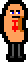
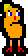
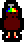

PRONG
Click here to return home.
This is the project page for PRONG. It will be populated once actual development starts. Until then, pretend like this page does not exist.
 Background
To be added.
 Features
Also to be added lol.
 Media
Also also to be added lol lol.